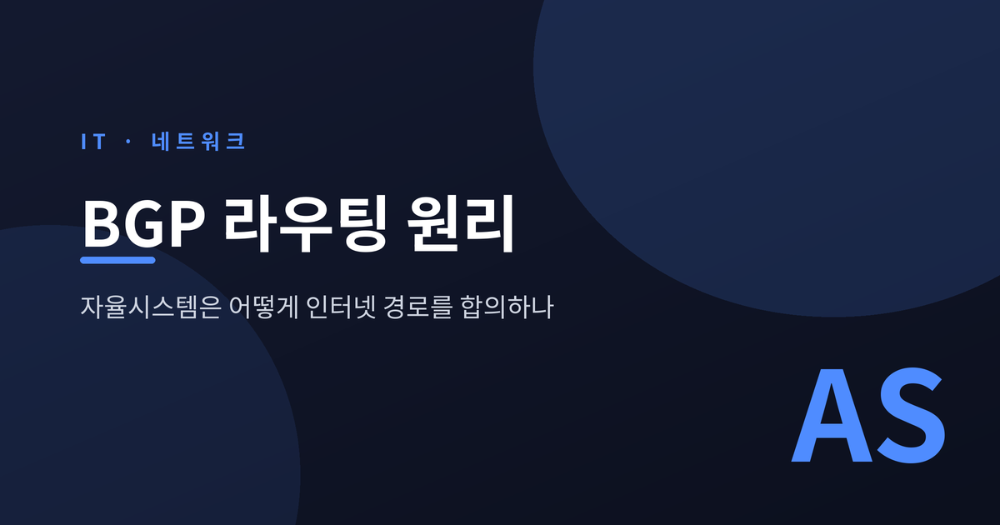
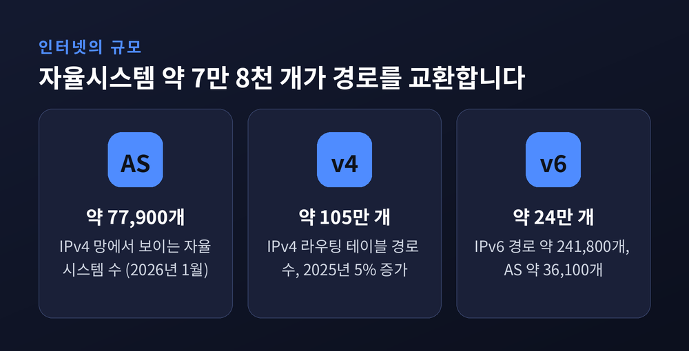
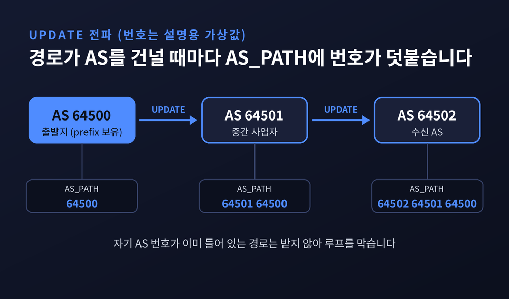
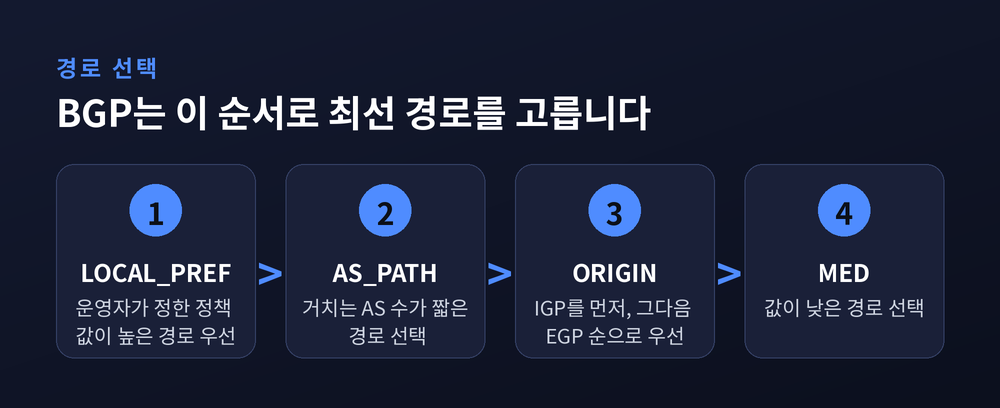
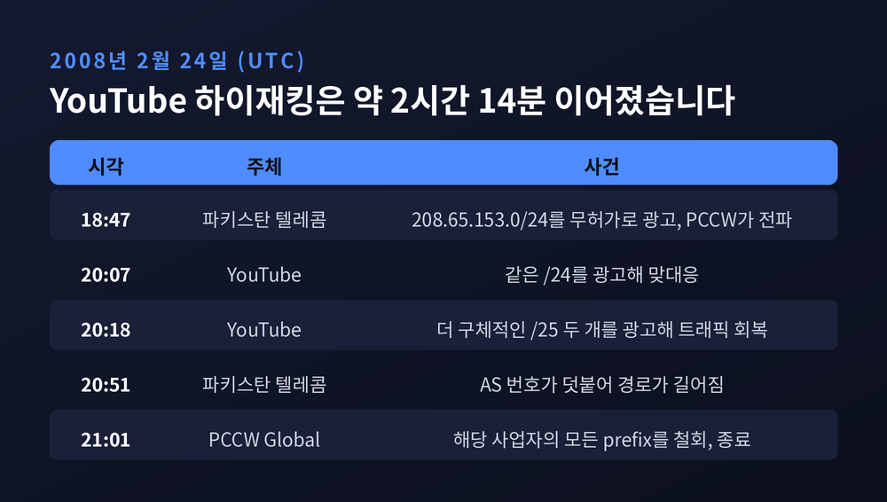
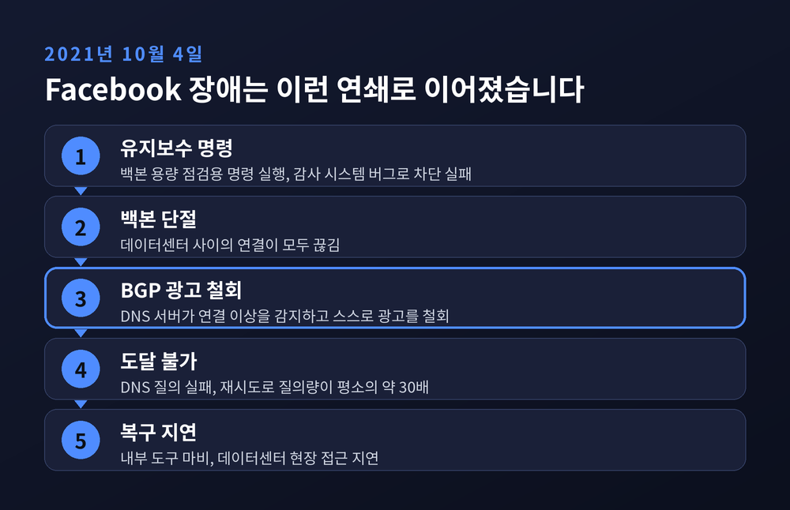
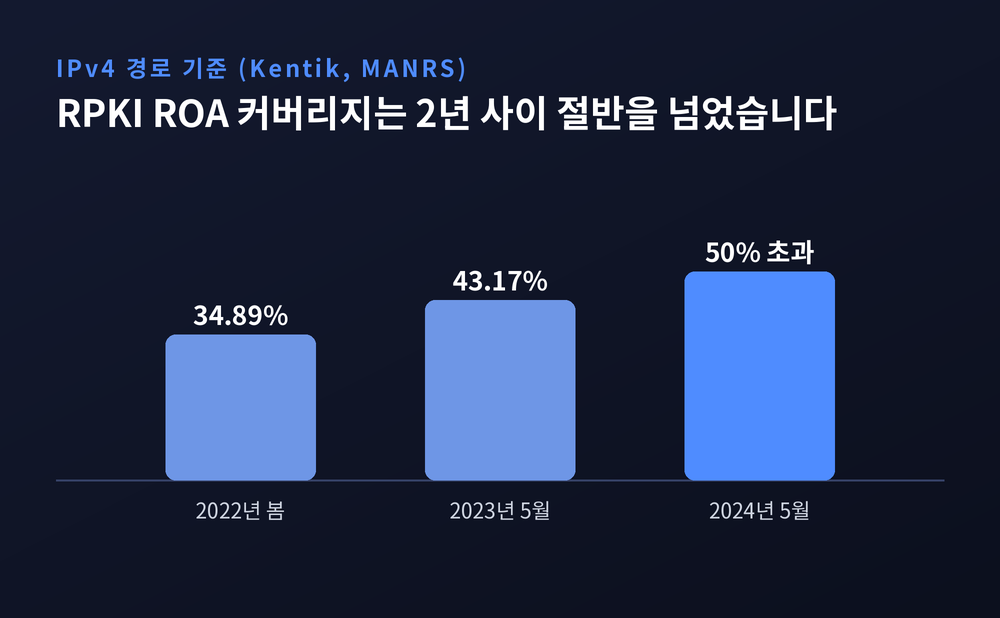

BGP 라우팅 원리 — 경로는 어떻게 합의되고 장애는 왜 번지나

오늘은 BGP 라우팅이 어떤 원리로 인터넷의 경로를 정하는지 이야기해 보려 합니다.
수만 개의 독립된 네트워크가 서로를 어디까지 믿고 경로를 주고받는지, 그리고 설정 한 줄이 왜 전 세계 장애로 번지는지를 실제 사례와 함께 정리했습니다.
세 줄 요약
- BGP는 자율시스템(AS)끼리 "이 주소로 가는 길을 안다"고 서로 알려주는 경로 벡터 프로토콜입니다.
- 경로는 최단 거리가 아니라 정책(LOCAL_PREF)을 먼저 보고 고르며, 기본적으로 이웃의 광고를 믿습니다.
- 그 신뢰 때문에 2008년 YouTube 하이재킹, 2019년 경로 유출, 2021년 Facebook 장애가 번졌고, RPKI가 이를 막는 중입니다.
인터넷은 하나의 망이 아니라 자율시스템의 연합입니다
인터넷이라고 하면 거대한 단일 망을 떠올리기 쉽습니다.
실제로는 각자 운영 주체가 다른 네트워크가 이어 붙은 연합체입니다.
이 독립 네트워크 하나를 자율시스템(AS, Autonomous System)이라 부릅니다.
Cloudflare의 설명을 빌리면 "단일 조직이 운영하는 대규모 라우터 집합"입니다. 통신사, 클라우드 기업, 대학, 콘텐츠 사업자가 각자 AS를 하나 이상 갖고, 지역 인터넷 레지스트리에서 AS 번호(ASN)를 받습니다.
규모는 상당합니다. APNIC의 "BGP in 2025"에 따르면 2026년 1월 기준 IPv4 망에 보이는 AS는 약 77,900개이고, IPv4 라우팅 테이블은 약 105만 개의 prefix를 담고 있습니다. 2025년 한 해에만 약 5만 4천 개, 5%가 늘었습니다. IPv6도 약 24만 1,800개 prefix, AS 36,100개 수준입니다.

AS 내부는 각자 알아서 운영합니다. 그러나 AS와 AS 사이에서는 공통의 언어가 있어야 합니다. 그 언어가 BGP(Border Gateway Protocol)입니다. Cloudflare는 이를 "인터넷의 우체국"에 빗댑니다. 가능한 경로를 모두 살펴 가장 좋은 길을 고르는 일을 맡기 때문입니다.
경로는 어떻게 전파되는가 — UPDATE와 AS_PATH
BGP 라우터는 이웃 라우터와 TCP 179번 포트로 세션을 맺습니다. RFC 4271은 메시지를 네 종류로 정의합니다. 세션을 여는 OPEN, 경로 정보를 전하는 UPDATE, 연결을 확인하는 KEEPALIVE, 오류를 알리고 세션을 닫는 NOTIFICATION입니다.
핵심은 UPDATE입니다. 어떤 AS가 "이 prefix는 내가 가진 주소 블록입니다"라고 알리면, 이웃은 그 경로를 받아 자기 AS 번호를 앞에 덧붙여 다시 이웃에게 넘깁니다. 이렇게 경로가 거쳐 온 AS 번호의 목록이 AS_PATH입니다.
예를 들어 보겠습니다. 번호는 설명을 위한 가상의 값입니다. AS 64500이 자기 prefix를 광고하면, 이를 받은 AS 64501은 경로를 "64501 64500"으로 바꿔 넘기고, 그다음 AS 64502는 "64502 64501 64500"을 받게 됩니다. 도착지까지 AS를 몇 개 건너는지가 그대로 기록되는 셈입니다.
이 목록에는 한 가지 쓸모가 더 있습니다. 자기 AS 번호가 이미 들어 있는 경로는 받지 않습니다. 경로가 돌고 도는 루프를 이렇게 막습니다. 지도 전체를 공유하는 방식이 아니라 "이쪽으로 가면 이 AS들을 거칩니다"라는 경로 목록만 전하기 때문에 경로 벡터(path vector) 프로토콜이라고 부릅니다.

여러 경로 중 하나를 고르는 순서
같은 목적지로 가는 경로가 여러 개 들어오면 라우터는 하나를 골라야 합니다. RFC 4271 9.1절의 결정 과정을 단순화하면 다음 순서입니다.
1. LOCAL_PREF가 높은 경로를 우선합니다.
2. AS_PATH가 짧은 경로를 고릅니다.
3. ORIGIN 유형이 IGP인 경로를 EGP, INCOMPLETE보다 먼저 봅니다.
4. MULTI_EXIT_DISC가 낮은 경로를 택합니다.
눈여겨볼 점은 순서입니다. 가장 먼저 보는 것은 거리(AS_PATH 길이)가 아니라 LOCAL_PREF입니다. 이 값은 운영자가 정책으로 정하는 숫자입니다. 값을 높게 줄 수 있으니 계약상 더 싸거나 더 선호하는 이웃으로 보낼 수 있습니다. 그래서 BGP는 최단 경로 알고리즘이라기보다 사업자 사이의 정책을 반영하는 합의 도구에 가깝습니다.

그리고 하나 더 있습니다. 라우터는 같은 주소를 가리키는 경로가 둘이면 더 구체적인(긴) prefix를 우선합니다. 최장 일치(longest-prefix match) 규칙입니다. 이 규칙은 곧 보실 사건에서 공격의 도구이자 방어의 도구가 됩니다.
신뢰 위에 세워진 구조 — 2008년 YouTube 사건
BGP에는 광고를 검증하는 장치가 처음부터 들어 있지 않습니다. Cloudflare의 표현대로 자율시스템은 자신에게 공유된 경로를 암묵적으로 신뢰합니다. 이 약점이 드러난 대표 사례가 2008년 2월 24일의 일입니다.
RIPE NCC가 정리한 타임라인(UTC)은 이렇습니다. 18시 47분, 파키스탄 텔레콤(AS17557)이 YouTube의 정상 블록 208.65.152.0/22 안에 있는 208.65.153.0/24를 광고했습니다. 상위 사업자 PCCW Global(AS3491)이 이를 전 세계로 전파했습니다. /24는 /22보다 구체적이므로 longest-prefix 규칙에 따라 세계 각지의 트래픽이 파키스탄으로 쏠렸습니다.
20시 07분, YouTube(AS36561)가 같은 /24를 광고해 맞섰고, 20시 18분에는 이보다 더 잘게 쪼갠 /25 두 개를 광고해 트래픽을 되찾았습니다. 구체적인 쪽이 이기는 규칙을 방어에도 쓴 것입니다. 20시 51분에는 파키스탄 텔레콤 광고에 AS 번호가 덧붙어 경로가 길어졌고, 21시 01분 PCCW Global이 해당 사업자의 모든 prefix를 철회하면서 사건이 끝났습니다. 하이재킹은 약 2시간 14분 이어졌습니다.
참고로 MANRS는 이 사건에서 YouTube에 접속할 수 없던 시간을 약 한 시간으로 서술합니다. 측정 기준이 달라 보이며, 어느 쪽이 맞는지는 확인되지 않았습니다. 이 글은 RIPE의 타임라인을 따랐습니다.

설정 실수는 어떻게 전 세계로 번지는가
2019년 6월 24일에는 악의 없는 실수가 큰 장애가 됐습니다. 펜실베이니아의 ISP DQE Communications(AS33154)를 쓰던 고객사 Allegheny Technologies(AS396531)의 BGP optimizer 제품이 Cloudflare의 104.20.0.0/20 같은 prefix를 더 작은 조각으로 쪼개 광고했고, 이 경로가 Verizon(AS701)까지 올라가 그대로 퍼졌습니다. 이번에도 구체적인 경로가 이긴 것입니다. 피크 때 Cloudflare 글로벌 트래픽의 약 15%가 사라졌고, Amazon과 Linode의 서비스도 상당 지역에서 접근이 어려웠습니다.
Cloudflare는 prefix 개수 상한 설정, IRR 필터링, RPKI를 막을 수 있었던 수단으로 꼽았습니다. 상위 사업자가 고객의 광고를 걸러 주었다면 번지지 않았을 일이라는 뜻입니다.
2021년 10월 4일의 Facebook 장애는 결이 조금 다릅니다. 외부 공격이나 하이재킹이 아니라 내부 변경이 시작이었습니다. Meta의 설명에 따르면 백본 용량을 점검하려던 유지보수 명령이 "의도치 않게 백본 네트워크의 모든 연결을 끊었고", 이를 막아야 할 감사 시스템에도 버그가 있었습니다.
여기서 연쇄가 이어집니다. Facebook의 DNS 서버는 데이터센터와 통신할 수 없으면 네트워크가 비정상이라고 판단해 스스로 BGP 광고를 철회하도록 설계되어 있었습니다. 서버는 멀쩡했지만 인터넷에서는 주소가 사라졌습니다. ThousandEyes는 15시 39분(UTC)에 수백 개 prefix의 철회가 시작됐고 AS32934의 DNS 네임서버용 IPv4 prefix 7개가 라우팅 테이블에서 사라졌다고 분석했습니다. Cloudflare에 따르면 1.1.1.1과 8.8.8.8 같은 리졸버는 SERVFAIL을 돌려보냈고, 재시도가 쌓이면서 DNS 질의량이 평소의 약 30배에 이르렀습니다.
복구가 더딘 이유도 같은 곳에 있었습니다. 내부 도구까지 DNS에 의존해 진단이 어려웠고, 데이터센터의 물리 보안 절차가 현장 접근을 늦췄습니다. 지속 시간은 출처마다 다릅니다. Cloudflare는 약 6.5시간, ThousandEyes는 7시간 이상으로 봅니다. 그래서 "6~7시간 이상"이라고만 적겠습니다. Wikipedia는 Downdetector에 1,000만 건 넘는 문제 보고가 접수됐고 주가가 약 5% 하락했다고 전합니다. 이는 추정치로 보시는 편이 안전합니다.

세 사건에는 공통점이 있습니다. BGP는 받은 광고가 맞는지 스스로 확인하지 않습니다. 그래서 한 곳의 실수가 신뢰의 사슬을 타고 순식간에 전 세계 라우팅 테이블에 닿습니다.
방어선 — RPKI와 경로 검증
해법의 축은 RPKI(Resource Public Key Infrastructure)입니다. 주소 소유자가 ROA(Route Origin Authorization)라는 서명 기록에 "이 prefix는 이 AS만 광고할 수 있다"고 남겨 두면, 라우터가 받은 광고를 이 기록과 대조해 어긋나면 버리는 방식입니다. 이 검증을 ROV(Route Origin Validation)라 합니다. Cloudflare는 ROA를 만드는 일과 AS가 invalid 경로를 거부하는 일, 두 단계가 모두 필요하다고 짚습니다.
채택은 느리지만 꾸준합니다. Kentik 분석으로 ROA 커버리지는 2022년 봄 IPv4 34.89%에서 2023년 5월 43.17%로 올랐습니다. MANRS는 2024년 5월 처음으로 IPv4 경로의 과반이 ROA로 덮였고, 인터넷 트래픽의 70.3%가 RPKI-valid 목적지로 향한다고 발표했습니다. 검증이 퍼질수록 invalid 경로의 전파는 줄어서, 2022년 초 이후 24% 감소했습니다.

한계도 분명합니다. RPKI는 "누가 이 prefix의 주인인가"를 검증할 뿐, 경로 전체가 올바른지는 보증하지 않습니다. 검증하지 않는 이웃에게서 오는 유출에는 여전히 취약합니다. 2008년 사례처럼 prefix 소유자를 가장한 광고는 막을 수 있어도, 중간 경로를 속이는 일까지 막지는 못합니다. IRR 필터도 데이터 정확성이 문제로 남아 있습니다.
정리하면 이렇습니다.
BGP는 수만 개의 독립된 네트워크가 서로의 말을 믿고 길을 합의하는 체계입니다. 그 신뢰가 인터넷을 이만큼 키웠고, 같은 이유로 작은 실수가 크게 번집니다.
"인터넷의 길은 합의로 정해지고, 합의는 검증으로 지켜집니다."
다음에 서비스가 한꺼번에 먹통이 되었다는 소식을 접하신다면, 서버가 아니라 길이 사라진 것은 아닌지 먼저 떠올려 보시길 권합니다.